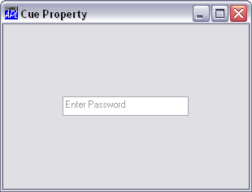

| Applies To: | ButtonEdit | Edit |
Description
This property specifies optional text to be displayed when a ButtonEdit or an Edit object is empty. For an Edit object it applies only if the Style of the Edit object is 'Single'.
Note that this feature only applies if Native Look and Feel is enabled.
The Boolean property ShowCueWhenFocused determines whether or not the cue should also be displayed once the user has tabbed into or clicked on the input field (and thus given it the focus).
'F' ⎕WC 'Form' 'Cue Property'
'F.E' ⎕WC 'Edit'
F.E.Cue←'Enter Password'